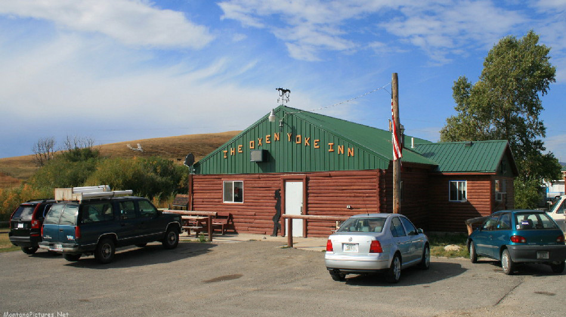
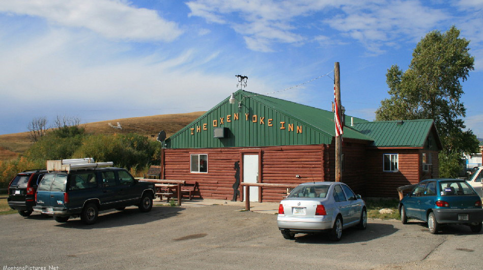
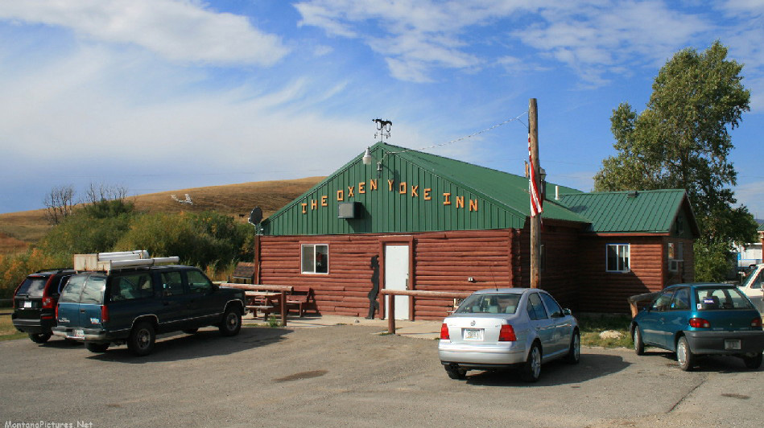

Judith Basin County
Home
Cascade County
Meagher County
Wheatland County
Judith Basin County
Major Cities & Towns
Utica
Sapphire Village
Stanford
Attractions
Russian Flats
Big Baldy Mountain
Ackley Lake State Park

Pictured Left to Right
Lewis and Clark National Forest
Oxen Yoke Inn Restaurant in Utica
 
